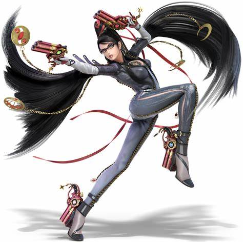
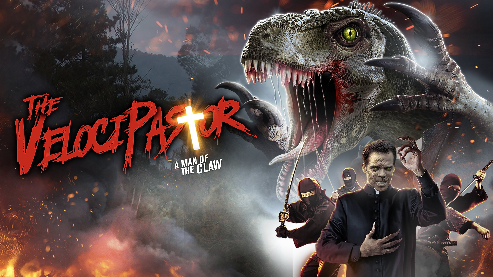
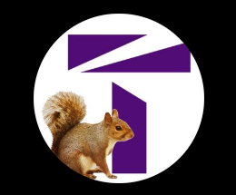
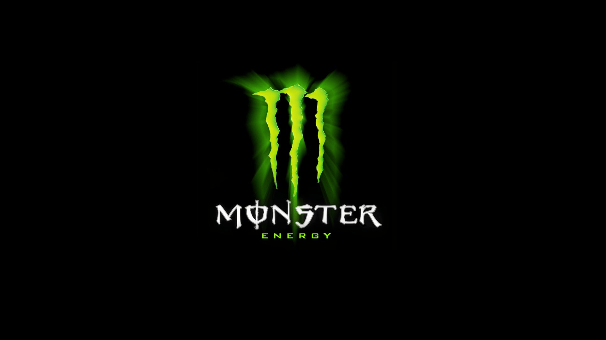
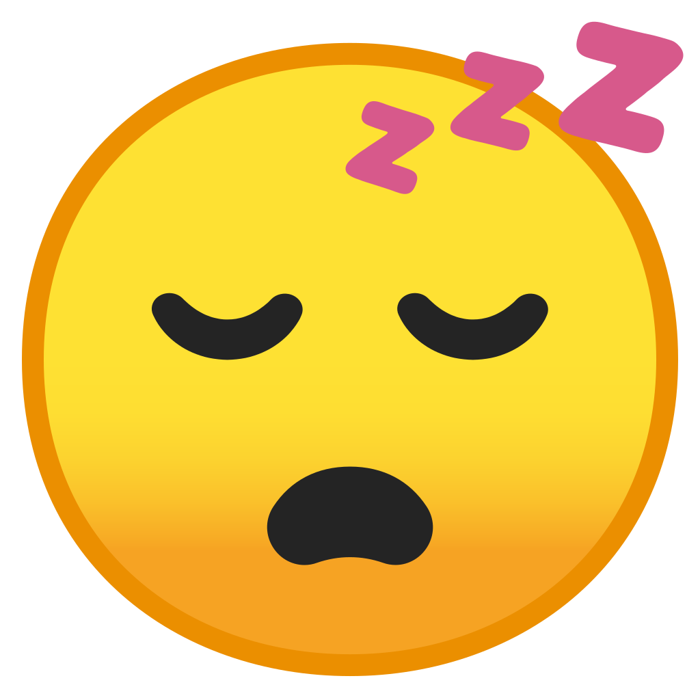
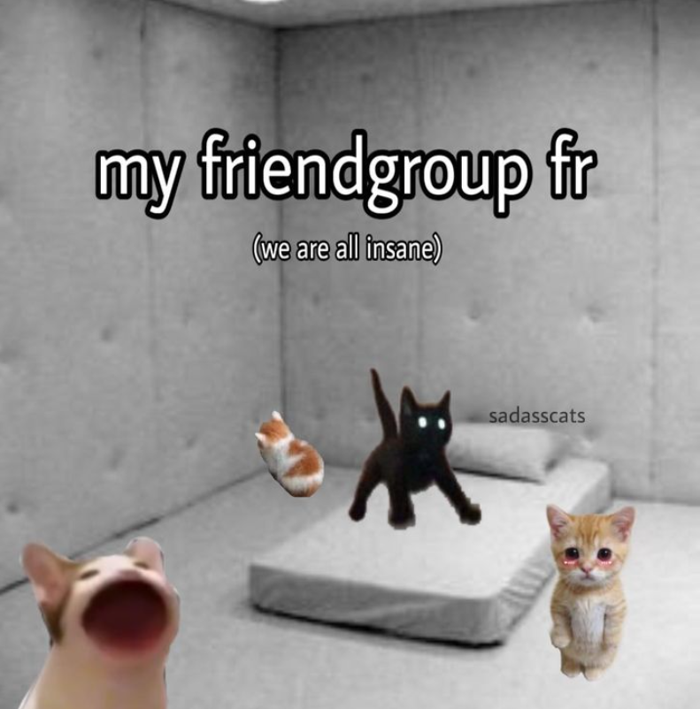
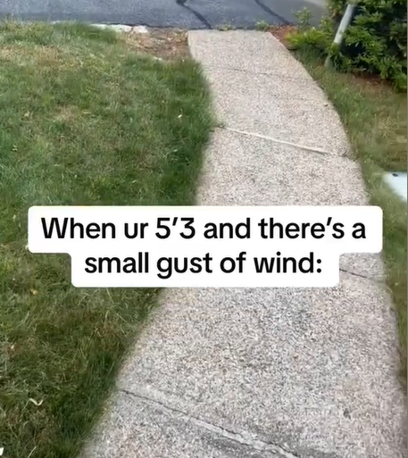
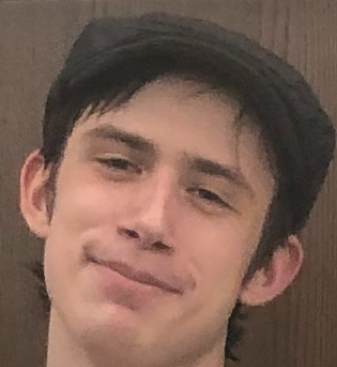

#10: Bayonetta from Super Smash Brothers Ultimate
She's the most fun character in Super Smash Brothers Ultimate. Cole just doesn't get it. He's not cultured. He's a cringe Isabelle main. Like, who likes Isabelle? Anyways, her combos are cool, her edgeguards are fun, she's super creative, and she makes me happy. Also, people get mad when they lose to her, so that's neat.
#9: The VelociPastor
The velocipastor is a classic of modern cinema. With a riveting plot, a unique, insightful idea, and some of the worst acting ever seen in a film, it's one of those bad movies that's just SO fun to watch. And you get to see a dinosaur pastor beat up bad guys in a hulk-esque fury. What more could you ask for?
#8: LOLCODE

It's a coding language that lets you code like a cat meme. CAN HAS STDIO? I HAS A VAR. IM IN YR LOOP. What more could you ask for? .... Maybe a bit of functionality, but that's for losers, and it's turing complete, so it can do what those silly "industry languages" can but cooler.
#7: Atomic Chess
Chess but the pieces explode. Kings can touch, games routinely end before move 15, and material doesn't matter. And did I mention the pieces explode? It's so cool. And I'm the best at it at Truman. So that makes it even betterer.
#6: Truman Squirrels
You know them. You love them. Truman's squirrels are a beloved fixture of the local community. From dropping acorns on you to scurrying out in front of you on your way to class, or even just being weird lil guys to look at, campus truly would not be the same without them.
#5: Monster Energy
The average college kid's pipeline to caffeine addiction. You see people hold them on the way to class, drink them inappropriately late in the library, or talk about slamming 4 straight in the epic homework bender of Junior year, and their presence reminds you that yea, we're all in this together, and it's not always fun. At least they taste good.
#4: Sleep
Sleep is good. I do not get enough of it sometimes. Which is bad (getting sleep is commonly seen to be good). I wish I got more sleep (who doesn't?) but it's okay. I like to take melatonin sometimes to help me sleep. Melatonin is good. And it gives me funny dreams, which are silly and goofy haha
#3: Funny Cats
Cats being silly little guys. Cat in various funny scenarios. Cats that make you feel things. Cats you wish you could feel. What more is there to want than silly little guys being eeby or sleeby or heccin chonkers or weird lil dudes. I love cats. I have 5 of them. They are all very nice. I wish I could pet them right now. Cats are good. Cats :)
#2: Making Fun Of Short People
I have a lot of short friends. My sister is short. My ex-girlfriend is short. My buddy Wes is short (he is 6'4). One of my favorite things to do when I see my short friends is remind them they're short. That they can't reach the top shelf. That they can't ride all the rides at Six Flags. That brings me joy. Their genetic misfortune makes me happy.
#1: Internet Programming Class

Please give me extra credit. Please give me extra credit. Please give me extra credit. Please give me extra credit. Please give me extra credit. Please give me extra credit. Please give me extra credit. Please give me extra credit. Please give me extra credit. Please give me extra credit. Please give me extra credit. Please give me extra credit.
#0: Cole Bracken
Cole Bracken is my partner. Dottie asked to be his partner, but we agreed ahead of time that he would be my partner. This is because Cole and I are besties. Cole is really cool. He's super fun, humble, and goofy. He also refuses to believe he's a main character. So here's to Cole being a main character. He's awesome and we love him.